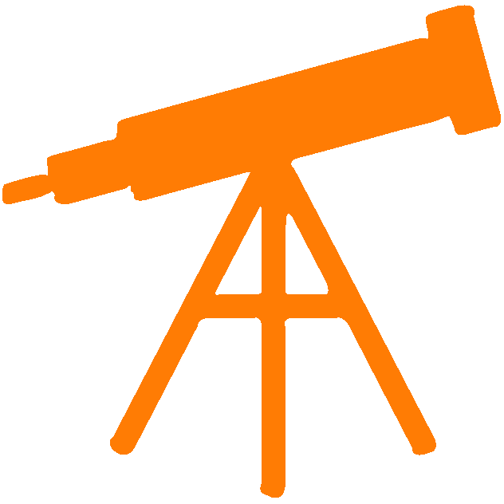
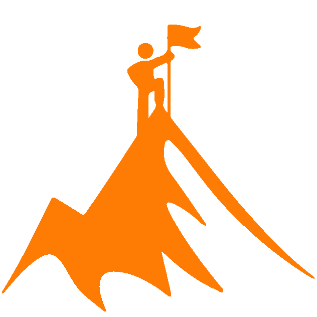

Vision
To be the leading centre in providing university preparation and adult education programs in the nation.
Objectives
- To provide high quality learning.
- To inculcate Islamic values and ethics in students.
- To develop students’ self-confidence.
- To develop students’ communication and problem solving skills.
- To provide basic English language communication skills for adult learners.

Mission
CCE strives for excellence in providing academic skills and build confidence to undertake university education